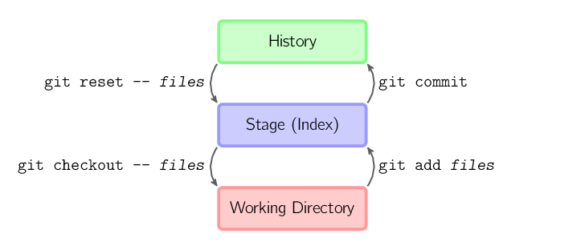

Hva er Git eller GitHub?
Forskjellen på Git og GitHub, er at Git er en gratis og åpen kildekode (open source) distribuerings kontrollsystem, designet for å kunne håndtere alt fra små til svært store prosjekter med fart og effektivitet. Programdelen til git, kan kun brukes på din maskin men det er her den flotte dele muligheten kommer inn i bilde. GitHub holder oversikt over alle filene dine. Det er den største og mest kjente. Så enkelt fortalt, git er fildelingssystemet (metoden) og GitHub er serverne der alle kan dele prosjektene sine.
Hvorfor skal vi bruke Git? Fordi det er godt egnet til samarbeid, felles oppgaver osv. Strukturert måte å dele ting på, struktur lagring av tidligere versjoner, muligheten til å gjenopprette tidligere versjoner. Branching
Det finnes alternativer til GitHub, subversjon var brukt en del tidligere på skolen. TFS er Microsoft sin versjon. Mercurial er mindre brukt. Til en viss grad kan man bruke Dropbox og Drive, men de er ikke like godt som git systemet.
Git med GIU, vis skal se på GitKraken. Siden det er det programmet jeg skal bruke. Man bruker slike programmer for ¨gjøre det enklere å bruke git. Andre programmer kan blant annet være Atlassian SourceTree eller SmartGit og GitHub sin egen.
